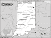

Indiana

Attention: If you use this or any of the AIRS lists in any state, please report any bad phone numbers or emails to the webmaster. This is the responsibility of all users, including you. Thank you!
Ed Woenker
(ewoenker@ctlnet.com)
CROSSROADS: U.S. 30 & I69
Fort Wayne: 46805
PHONE: 219-471-8271
AVAILABLE: Mon-Fri Evenings, Weekends
familiar with: 1600, dual carbs, type4 engine
I CAN PROVIDE THE FOLLOWING SERVICES:
INTERNET ACCESS
TOOLS
TELEPHONE ACCESS
MECHANICAL HELP
SPACE TO WORK ON BUS
COFFEE/TALK
CAMPING SPOT: 1 night
Favorite beer type: Anything cold
James Heth
EMAIL: james_heth_at_tayloru_dot_edu
CROSSROADS: I-69 exit 59
CITY: Upland
ZIP CODE: 46989
PHONE: 765-998-7687
ONLY CALL IF EMERGENCY
VW'S: '59 Bug, and a '68 bug
COMMENTS: I used to own 2 buses, used to work on VW's a lot growing up, sorta
getting out of it now. I'm willing to help, or give advice (i've experienced a
lot of problems in my days!) And I've done full restorations, and am capable of
tackling pretty much anything aircooled. Engines are my speciality i must admit.
AVAILABLE: Depends...
I am familiar with: Bastard40hp, 1200, 1300, 1500, 1600
I CAN PROVIDE THE FOLLOWING SERVICES:
TOOLS
MECHANICAL HELP
SOME PARTS
CAMPING: none
SPARE ROOM: none
Favorite beer type: Commercial brands
Kevin Ahlgrim
(kahlgrim@iusb.edu)
CROSSROADS: About 15 miles south of I94, I80/I90, 65 miles east of
Chicago, 25 miles west of South Bend.
LaPorte, 46350
PHONE: 219-851-2802
VW'S: 1973 VW Van
AVAILABLE: Week nights and weekends
familiar with: 1600, type4 engine
I CAN PROVIDE THE FOLLOWING SERVICES:
TOOLS
TRANSPORTATION HELP
MECHANICAL HELP
SPACE TO WORK ON BUS
STORAGE SPACE
COFFEE/TALK
SPARE ROOM
CAMPING SPOT: 2 nights
Joe Bartoli
EMAIL: joebartoli_at_hotmail_dot_com
CROSSROADS: I 74 & IN 9
CITY: Hope
ZIP CODE: 47246
PHONE: (812) 546-0148
VW'S: 1969 Westfalia
COMMENTS: I'll be glad to provide as much help as I can...
AVAILABLE: After 5 PM during the week, weekends anytime
I am familiar with: 1500, 1600
I CAN PROVIDE THE FOLLOWING SERVICES:
INTERNET ACCESS
TOOLS
TELEPHONE ACCESS
MECHANICAL HELP
COFFEE/TALK
CAMPING: none
SPARE ROOM: none
Favorite beer type: Commercial brands
Greg Lambert
(zod@portalworld.net)
CROSSROADS: I-465 and Meridian Road
Indianapolis, 46260
ONLY CALL IF EMERGENCY PHONE: 317-443-4728 or 445-4393
VW'S: Number of pre-68 Type IIs
AVAILABLE: Always
familiar with: 36hp, Bastard40hp, 1200, 1300, 1500, 1600, 1776+, dual carbs
I CAN PROVIDE THE FOLLOWING SERVICES:
INTERNET ACCESS
TOOLS
TELEPHONE ACCESS
TRANSPORTATION HELP
MECHANICAL HELP
CAMPING SPOT: 2 nights
SPARE ROOM: 2 nights
Favorite beer type: Room temp will do.
Atley
(sugermag@hotmail.com)
CROSSROADS: SR 19 & US 6
Nappanee, 46550
PHONE: (219)773/5239
VW'S: '77 bus, '82 van, '74 type4
COMMENTS: my parents place and i travel alot so i might not be there but they are super
nice and will help any way they can just asked if i am there and if not tell them what you
need and see if they can help you
familiar with: 1776+, fuel injection
I CAN PROVIDE THE FOLLOWING SERVICES:
INTERNET ACCESS
TOOLS
TELEPHONE ACCESS
TRANSPORTATION HELP
MECHANICAL HELP
SPACE TO WORK ON BUS
PARTS AVAILABLE
COFFEE/TALK
CAMPING SPOT: 1 night
SPARE ROOM: 1 night
Favorite beer type: Thick and chewy
Jim
(captain@iquest.net)
CROSSROADS: I-65 & I-70
Indianapolis, 46237
PHONE: 317-786-0464
VW'S: 1971 Riviera, 1980 Vanagon
COMMENTS: I have some tools. A small amount of knowlege.
Several shop manuals and know where the local VW shops
are.
AVAILABLE: Evenings during the week and most weekends.
familiar with: 1600
I CAN PROVIDE THE FOLLOWING SERVICES:
INTERNET ACCESS
TOOLS
TELEPHONE ACCESS
SPACE TO WORK ON BUS
COFFEE/TALK
CAMPING SPOT: 1 night
Favorite beer type: Micro brands
KH
(kkhng7@cs.com)
CROSSROADS: I65 and Lafayette
West Lafayette, 47906
PHONE: 765 463-1683
VW'S: '75 Camper Bus
INTERNET ACCESS
TOOLS
TELEPHONE ACCESS
TRANSPORTATION HELP
Bud Walterhouse
(lpmc.bud@gte.net)
CROSSROADS: I-80 & 1-94, US 35
LaPorte, 46350
PHONE: 219-326-1332 or 219-362-1133
ONLY CALL IF EMERGENCY
VW'S: 1967 Bus, 1965 Beetle
AVAILABLE: 8AM to 9PM
familiar with: 1200, 1600
I CAN PROVIDE THE FOLLOWING SERVICES:
INTERNET ACCESS
TOOLS
TELEPHONE ACCESS
TRANSPORTATION HELP
MECHANICAL HELP
SPACE TO WORK ON BUS
STORAGE SPACE
PARTS AVAILABLE
Scott
CROSSROADS: Hwy 124 & Hwy 15
EMAIL: ScottMitziS@hotmail.com
Wabash, 46992
PHONE: 765-981-4345
VW'S: '69 Westy
COMMENTS: Fairly new to aircooled...have the tools and space
AVAILABLE: usually flexible...more so with more lead time.
I am familiar with: 1600
I CAN PROVIDE THE FOLLOWING SERVICES:
INTERNET ACCESS
TOOLS
TELEPHONE ACCESS
TRANSPORTATION HELP
MECHANICAL HELP
SPACE TO WORK ON BUS
COFFEE/TALK
CAMPING: 2 nights
Favorite beer type: I don't drink
Dwayne Deckard
CROSSROADS: I-70 u.s.41
PHONE: 812-443-5063
ONLY CALL IF EMERGENCY
VW'S: 1987 Vanagon,63 beetle,59 dunebuggy
AVAILABLE: 7 days a week-9a.m.-9-p.m.
I am familiar with: 36hp, 1200, 1300, 1500, 1600, 1776+, dual carbs
I CAN PROVIDE THE FOLLOWING SERVICES:
INTERNET ACCESS
TOOLS
TELEPHONE ACCESS
TRANSPORTATION HELP
MECHANICAL HELP
SPACE TO WORK ON BUS
CAMPING: 2 nights
Favorite beer type: Commercial brands
Paul
CROSSROADS: I-70 + IN SR 59
EMAIL: psbaty at yahoo dot com
Brazil/Terre Haute, 47834
PHONE: 812-443-0804
VW'S: 1977 Westy
COMMENTS: Anything I've had(or wanted) to fix on my VW I know how to do...some examples:
replacing gas tank, alternator, fuel pump and filter, and electrical.
AVAILABLE: Hit and Miss
I am familiar with: fuel injection
I CAN PROVIDE THE FOLLOWING SERVICES
INTERNET ACCESS
TOOLS
TELEPHONE ACCESS
TRANSPORTATION HELP
MECHANICAL HELP
SPACE TO WORK ON BUS
CAMPING: 4 nights or more
SPARE ROOM: none
Favorite beer type: I don't drink
Ed Bass
CROSSROADS: I70 & I65
EMAIL: edward.bass@gm.com
CITY: Indianapolis, 46260
PHONE: 317-251-1150
VW'S: 1978 Type II camper
AVAILABLE: evenings and weekends
I am familiar with: fuel injection
I CAN PROVIDE THE FOLLOWING SERVICES
INTERNET ACCESS
TOOLS
TELEPHONE ACCESS
TRANSPORTATION HELP
MECHANICAL HELP
SPACE TO WORK ON BUS
SOME PARTS
CAMPING: none
SPARE ROOM: 1 night
Favorite beer type: Anything cold
Charles Claassen
EMAIL: cclaassen@earthlink.net
CROSSROADS: I-65,I-70,I-74,others
Indianapolis, 46205
PHONE: (317)735-6942,(317)924-2619
VW'S: 1979 Bus
AVAILABLE: After 3PM
I am familiar with: fuel injection, type4 engine
I CAN PROVIDE THE FOLLOWING SERVICES
INTERNET ACCESS
TOOLS
TELEPHONE ACCESS
TRANSPORTATION HELP
MECHANICAL HELP
COFFEE/TALK
CAMPING: none
SPARE ROOM: none
Favorite beer type: Anything cold
Jason Antolovich
EMAIL: jantolov@purdue.edu
CROSSROADS: US 52
West lafayete, 47906
PHONE: 765-497-1425
VW'S: 74 bus
AVAILABLE: randomly
I am familiar with: 1776+
I CAN PROVIDE THE FOLLOWING SERVICES
INTERNET ACCESS
TELEPHONE ACCESS
TRANSPORTATION HELP
COFFEE/TALK
CAMPING: none
SPARE ROOM: 1 night
Favorite beer type: Anything cold
Paul Retherford
EMAIL: paulr_at_meuem_dot_com
CROSSROADS: I70 and US40
Hagerstown, 47346
PHONE: 765-277-2308
VW'S: '89 Vanagon Westfalia
AVAILABLE: most evenings
I am familiar with: type4 engine, wasserboxer, diesel
I CAN PROVIDE THE FOLLOWING SERVICES
Internet, Tools, Telephone, Space
CAMPING: 1 night
Favorite beer type: Home brews 'XXX'
Charlene Faris
EMAIL: photobee_at_qserve_dot_net;charlenefaris_at_yahoo_dot_c
CROSSROADS: few miles off I-65 at Zionsville exit
Indianapolis, 46077
PHONE: 317-873-0738
VW'S: 1973 Volkswagen SuperBeetle
COMMENTS: While I am not mechanical, I can provide telephone, internet, etc.
assistance to someone. I do not have space for storage or for working on a
vehicle. May consider someone to stay overnight but am in a very limited space.
Can provide a referral to the fellow at Greencastle, IN who has my VW now and
works only on air cooled engines.
Feel free to contact me online on AOL Messenger: PhotoBeetl
(yes, no E); MSN Messenger: PhotoBeetle (yes, with an E) or Yahoo
Messenger: charlenefaris
AVAILABLE: anytime
I am familiar with: 1600
I CAN PROVIDE THE FOLLOWING SERVICES
INTERNET ACCESS
TELEPHONE ACCESS
TRANSPORTATION HELP
COFFEE/TALK
CAMPING: none
SPARE ROOM: none
Favorite beer type: I don't drink
Henry Prange
EMAIL: prange_at_indiana_dot_edu
CROSSROADS: IN SR37 & IN SR46
CITY: Bloomington, 47401
PHONE: 812-322-7816
ONLY CALL IF EMERGENCY
VW'S: '78 Westy
COMMENTS: My first VW of any kind. I have a lot of experience with older foreign
cars and a good sets of metric tools.
AVAILABLE: Anytime you can reach me.
I CAN PROVIDE THE FOLLOWING SERVICES
INTERNET ACCESS
TOOLS
TELEPHONE ACCESS
TRANSPORTATION HELP
MECHANICAL HELP
SPACE TO WORK ON BUS
CAMPING: none
SPARE ROOM: 2 nights
Favorite beer type: Micro brands
Mike Ashley
EMAIL: mike_at_ashleyfamily_dot_org
CROSSROADS: I-69 and I-465
CITY: Indianapolis
PHONE: (317) 579-9869
ONLY CALL IF EMERGENCY
VW'S: 1973 Super Beetle, 2000 New Beetle
AVAILABLE: After 4pm weeksdays, all weekend
I CAN PROVIDE THE FOLLOWING SERVICES
INTERNET ACCESS
TOOLS
TELEPHONE ACCESS
TRANSPORTATION HELP
SPACE TO WORK ON BUS
SPARE ROOM: 1 night
Favorite beer type: Commercial brands
Dustin Morton
EMAIL: methmaker1_at_msn_dot_com
CROSSROADS: us 31 & Indiana 18
CITY: kokomo
ZIP CODE: 46901
PHONE: 3174465620
VW'S: 71 bug (baja)
COMMENTS: i own one , owned one a few years back, and i'm looking for another
one. Nuff said. if you're bored call, if you're broke down call.
AVAILABLE: totally random (call first)
I am familiar with: 1500, 1600
I CAN PROVIDE THE FOLLOWING SERVICES
INTERNET ACCESS
TOOLS
TELEPHONE ACCESS
TRANSPORTATION HELP
MECHANICAL HELP
SPACE TO WORK ON BUS
COFFEE/TALK
CAMPING: 1 night
SPARE ROOM: 1 night
Favorite beer type: Anything cold
Jason Bousley
EMAIL: jbousley_at_verizon_dot_net
CROSSROADS: I-70 & HWY 41
CITY: Terre Haute
ZIP CODE: 47802
PHONE: 812-299-8562
VW'S: 1983 Vanagon
COMMENTS: I have room if someone needs to stay at my house, but he/she must
liketo drink beer. My buddy is a Volkswagon builder and he only lives a few
miles away so he's the real help. He drinks beer too.
AVAILABLE: anytime
I CAN PROVIDE THE FOLLOWING SERVICES
INTERNET ACCESS
TOOLS
TELEPHONE ACCESS
TRANSPORTATION HELP
MECHANICAL HELP
SPACE TO WORK ON BUS
SOME PARTS
COFFEE/TALK
CAMPING: 4 nights or more
SPARE ROOM: 4 nights or more
Favorite beer type: Anything cold
Ravenbluewolf/Frank Mitchell
EMAIL: ravenbluewolf2u_at_aol_dot_com
CROSSROADS: Highway 51 and route 6
CITY: Lake Station I
ZIP CODE: 52245
PHONE: 319 354 0687
VW'S: 1985 Vanagon Vw camper bus brown
COMMENTS: I was attending a Nieces Graduation..I hit a semi truck tire and the
bus started smoking/steaming..I pulled off immediately.
I had it towed to an Uncles house who was a mechanic for 50 years...but he is
old and knows nothing about VWs I am an artist currently laid off Unemployed
living in Iowa City Iowa
AVAILABLE: anytime
I CAN PROVIDE THE FOLLOWING SERVICES
COFFEE/TALK
CAMPING: 4 nights or more
SPARE ROOM: 4 nights or more
Favorite beer type: Anything cold
Gerry Gorski
EMAIL: gerrygorski_at_yahoo_dot_com
CROSSROADS: State Street & Bayer
CITY: Fort Wayne
ZIP CODE: 46805
PHONE: (260)482-4110
VW'S: 1968 Westy, 1969 Westy. 74 Ghia, 83 Rabbit
COMMENTS: Have parking and tools that can be used. Have parts to upright
aircooled Volkwagens. Have place to park and camp if needed.
AVAILABLE: Available most of the time, or when needed
I am familiar with: 25hp, 36hp, 1200, 1300, 1500, 1600, 1776+, dual carbs, type4
engine
I CAN PROVIDE THE FOLLOWING SERVICES
TOOLS
TELEPHONE ACCESS
TRANSPORTATION HELP
MECHANICAL HELP
SPACE TO WORK ON BUS
SOME PARTS
COFFEE/TALK
CAMPING: 4 nights or more
SPARE ROOM: none
Favorite beer type: Anything cold
Jeff / Eurodoublecab
EMAIL: partyofsix_at_psci_dot_net
CROSSROADS: I 64 & IN 231
CITY: Santa Claus
ZIP CODE: 47579
PHONE: 812-686-1577
ONLY CALL IF EMERGENCY
VW'S: 1992 Eurovan Doublecab, 1965 21 window van, 1996 Passat TDI
COMMENTS: I have quite a few used vw parts, all air cooled, mainly vanagon
stuff, some 1600cc bug/bus stuff
AVAILABLE: I work Shift work, too confusing, just call
I am familiar with: 36hp, Bastard40hp, 1200, 1300, 1500, 1600, 1776+, dual carbs,
fuel injection, type4 engine, wasserboxer, diesel
I CAN PROVIDE THE FOLLOWING SERVICES
INTERNET ACCESS
TOOLS
TELEPHONE ACCESS
TRANSPORTATION HELP
MECHANICAL HELP
SPACE TO WORK ON BUS
STORAGE SPACE
SOME PARTS
CAMPING: 1 night
Favorite beer type: I don't drink
Ludwig
EMAIL: r-ludwig_at_sbcglobal_dot_net
CROSSROADS: Indiana 37 & 2nd St
CITY: Bloomington
ZIP CODE: 47403
PHONE: 812-339-6858
VW'S: '66 Beetle, '78 Sunroof Bus
COMMENTS: I'm skilled with AFC fuel injection, have many injection parts as well
as type I parts, and enjoy repairing any air-cooled VW. I enjoy assisting others
with their Volkswagens as well. '72-'79 buses are my favorite.
AVAILABLE: Mon-Fri after 4PM and no later than 10PM
I am familiar with: 1200, 1300, fuel injection, type4 engine
I CAN PROVIDE THE FOLLOWING SERVICES
INTERNET ACCESS
TOOLS
TELEPHONE ACCESS
TRANSPORTATION HELP
MECHANICAL HELP
SPACE TO WORK ON BUS
SOME PARTS
COFFEE/TALK
CAMPING: 2 nights
SPARE ROOM: 2 nights
Favorite beer type: Anything cold
Sue Breiner
(vwsue@carlover.org)
CROSSROADS: Northern Indiana, near South Bend 46530
near
Indiana Toll Road/Interstate 80
Phone 574 247-1929
VW'S: 1972 Karmann Ghia convertible
COMMENTS:
I have tools/books but not much mechanical ability. I'm a member of the
Michigan
VW Club and have owned a '68 bus and a '73 as well as various Bugs over the years.
Willing to be helpful if I can!
AVAILABLE: Most anytime before 10PM
I CAN PROVIDE THE FOLLOWING SERVICES:
INTERNET ACCESS
TOOLS
TELEPHONE ACCESS
TRANSPORTATION HELP
MECHANICAL HELP
SPACE TO WORK ON BUS
STORAGE SPACE
COFFEE/TALK
CAMPING SPOT: 2 nights
SPARE ROOM: 2 nights
Favorite beer type: Beer is for wimps!
Brock Scutchfield
EMAIL: brockscutchfield_at_yahoo_dot_com
CROSSROADS: Queen & SR17
CITY: Plymouth
ZIP CODE: 46563
PHONE: 574-936-2803
VW'S: 76'Westy,
AVAILABLE: any time
I am familiar with: 1500, dual carbs, fuel injection, type4 engine
I CAN PROVIDE THE FOLLOWING SERVICES
INTERNET ACCESS
TOOLS
TELEPHONE ACCESS
TRANSPORTATION HELP
MECHANICAL HELP
SPACE TO WORK ON BUS
SOME PARTS
COFFEE/TALK
CAMPING: 4 nights or more
SPARE ROOM: none
Favorite beer type: Thick and chewy
thefuzz
EMAIL: warrenshuppert_at_verizon_dot_net
CROSSROADS: I-74 and ST Rd 44
CITY: Shelbyville
ZIP CODE: 46176
PHONE: 765.932.1266
ONLY CALL IF EMERGENCY
VW'S: 61 Panel Conv, 69 Riviera
I am familiar with: 1600, type4 engine
I CAN PROVIDE THE FOLLOWING SERVICES
INTERNET ACCESS
TOOLS
TELEPHONE ACCESS
TRANSPORTATION HELP
MECHANICAL HELP
CAMPING: none
SPARE ROOM: 1 night
Favorite beer type: Anything cold
Rob Strieby
EMAIL: rcstrieby_at_earthlink_dot_net
CROSSROADS: US 6 and ST road 13
CITY: syracuse
ZIP CODE: 46567
PHONE: 453-6500
VW'S: 1976 westy
AVAILABLE: mon-thur 3pm to 9pm weekends whenever
I am familiar with: fuel injection
I CAN PROVIDE THE FOLLOWING SERVICES
INTERNET ACCESS
TOOLS
TELEPHONE ACCESS
TRANSPORTATION HELP
MECHANICAL HELP
SPACE TO WORK ON BUS
STORAGE SPACE
SOME PARTS
COFFEE/TALK
CAMPING: 4 nights or more
SPARE ROOM: none
Favorite beer type: Micro brands
jordan king
EMAIL: flatfour2007 at verizon_dot_net
CITY: portage, 46368
PHONE: 219 299 0366
I CAN PROVIDE THE FOLLOWING SERVICES:
TOOLS
TELEPHONE ACCESS
TRANSPORTATION HELP
MECHANICAL HELP
SOME PARTS
CAMPING: none
SPARE ROOM: none
Favorite beer type: Anything cold
Jenn
EMAIL: teachbmc at gmail dot com
CROSSROADS: U.S. 421 & 20
CITY: Michigan City
ZIP CODE: 46360
PHONE: 219-872-5220
ONLY CALL IF EMERGENCY
VW'S: 2 '81 Westy's
AVAILABLE: Hit and miss - leave message (checked regularly)
I CAN PROVIDE THE FOLLOWING SERVICES
INTERNET ACCESS
TELEPHONE ACCESS
TRANSPORTATION HELP
CAMPING: 1 night
SPARE ROOM: none
Favorite beer type: Anything cold
Andrew
EMAIL: ajstrain_at_indiana_dot_edu
CROSSROADS: US 37 and US 45
CITY: Bloomington
ZIP CODE: 47408
PHONE: 812-330-2363
VW'S: 1982 Vanagon Westfalia, 1998 Beetle
COMMENTS: I have some tools but not alot of VW specific tools. Always willing to
talk VWs when I have time.
AVAILABLE: Call anytime if emergency.
I am familiar with: fuel injection, type4 engine, diesel
I CAN PROVIDE THE FOLLOWING SERVICES
INTERNET ACCESS
TOOLS
TELEPHONE ACCESS
MECHANICAL HELP
SPACE TO WORK ON BUS
COFFEE/TALK
CAMPING: 4 nights or more
SPARE ROOM: CALL ME/IT DEPENDS
Favorite beer type: Non Alcoholic
Andy McDonald
EMAIL: andylysa_at_sbcglobal_dot_net
CROSSROADS: I64 AND US 150
CITY: FLOYDS KNOBS/LOUISVILLE, 47119 PHONE: 812-923-6379
VW'S: 1973 TYPE 2
COMMENTS: AM FAMILIAR WITH 1600DP LEARNING TYPE 4 ATT.
NOT A MECHANIC BUT WILLING TO HELP YA WITH ABOUT ANYTHING.
GOT TOOLS AND A NICE GARAGE.
AVAILABLE: I WORK SHIFTS SO JUST CALL
I am familiar with: 1500/1600, type4 engine
I CAN PROVIDE THE FOLLOWING SERVICES
INTERNET ACCESS
TOOLS
TELEPHONE ACCESS
TRANSPORTATION HELP
MECHANICAL HELP
SPACE TO WORK ON BUS
SOME PARTS/CAN GET THEM
COFFEE/TALK
CAMPING: 2 nights SPARE ROOM: 2 nights
Favorite beer type: Anything cold
Brian Tschuor
EMAIL: bswilly65_at_yahoo_dot_com
CROSSROADS: allisonville road and I-465
CITY: Indianapolis, 46250 PHONE: 317-374-5179
VW'S: 1971 vert bug,1965 hardtop bug
COMMENTS: Current President Circle City Volkswagen Club
Work for VW shop on Saturdays
Been into VW's for 12 years
AVAILABLE: Call me anytime if you need a hand
I am familiar with: Bastard40hp, 1200/1300, 1500/1600, 1776+, dual carbs
I CAN PROVIDE THE FOLLOWING SERVICES
INTERNET ACCESS
TOOLS
TELEPHONE ACCESS
TRANSPORTATION HELP
MECHANICAL HELP
SPACE TO WORK ON BUS
STORAGE SPACE
SOME PARTS/CAN GET THEM
COFFEE/TALK
CAMPING: 4 nights or more SPARE ROOM: CALL ME/IT DEPENDS
Favorite beer type: Anything cold
Mack
EMAIL: Mack_dot_mullins _at_ sbcglobal_dot_n
CROSSROADS: Mack.mullins@sbcglobal.net
CITY: Indianapolis, 46237
PHONE: 317-507-4746
VW'S: 1971 type 2 Westfalia
AVAILABLE: daylight hours, I work two jobs, so a little hard to catch with free
time
I am familiar with: 1500/1600
I CAN PROVIDE THE FOLLOWING SERVICES
INTERNET ACCESS
TOOLS
TELEPHONE ACCESS
TRANSPORTATION HELP
CAMPING: none SPARE ROOM: none
Favorite beer type: Commercial brands
Andy
EMAIL: andrew_dot_penwell_at_comcast_dot_net
CROSSROADS: IN S.R. 32 and Park Road
CITY: Anderson, 46011
ONLY CALL IF EMERGENCY PHONE: (317)
340-3404
VW'S: 1970 Westy and 1970 Standard Beetle
COMMENTS: I am pretty new to VW's I have enough tools to bandage something to
get you down the road and limited small parts.
AVAILABLE: do not call after 10p.m. Mon-Thurs. Don't call after 12a.m. on
weekends
I am familiar with: 1500/1600, dual carbs
I CAN PROVIDE THE FOLLOWING SERVICES
INTERNET ACCESS
TOOLS
TELEPHONE ACCESS
SPACE TO WORK ON BUS
SOME PARTS/CAN GET THEM
CAMPING: 1 night SPARE ROOM: none
Favorite beer type: Micro brands
John
EMAIL: Magicomic85_at_yahoo_dot_com
CROSSROADS: 465 and 70 east side
CITY: Indianapolis
ZIP CODE: 46219
PHONE: 313-965-7071
VW'S: 1600 dual port air cooled 1971 bus
COMMENTS: Somewhat new to mechanical workings on Vw. Know enough to help you
get down the road. Just rebuilt the top end of my 1600.
AVAILABLE: Willing to help anytime
{kind=link}